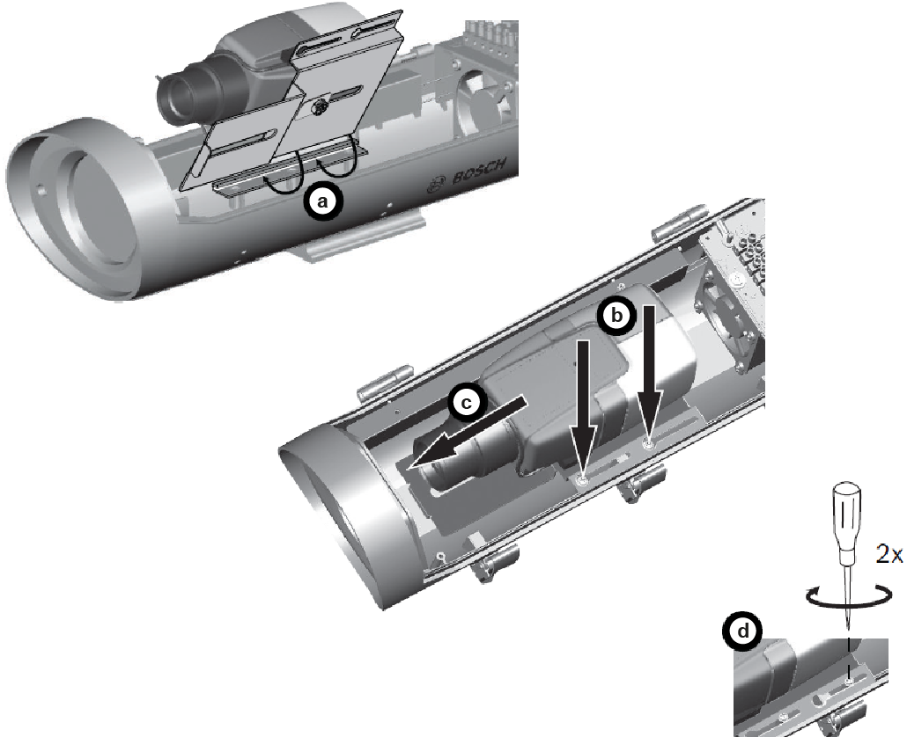

Installation of the Fixed Outdoor
Camera Unit.
-
Mount the replacement camera into the camera
housing.
- Slightly tilt the camera/lens tray assembly and slide it in under
the rail (which is located under the heater, on the right side of the
housing).
- Lower the tray, so that the holes at the side fit over the two
screws of the housing.
- Slide the entire assembly forward (approximately 5 mm (0.2 in.)
from the front of the
window).
- Tighten the two screws, to lock the tray in place.
Figure 1.
Camera mounting

-
Connect the network and the power cable.
-
Check, if the camera is functional.